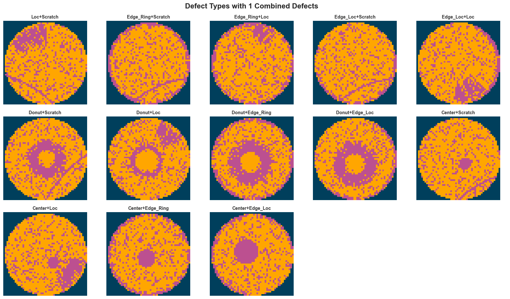
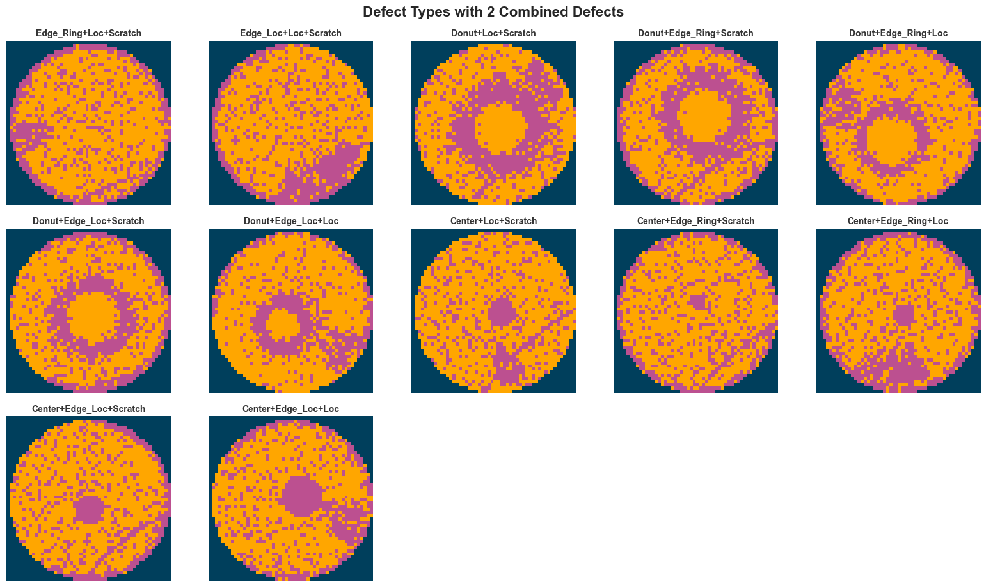

from collections import Counter
import matplotlib.pyplot as plt
import numpy as np
import pandas as pd
import seaborn as sns
data_path = "../data/mixedtype-wafer-defect-datasets/Wafer_Map_Datasets.npz"
data = np.load(data_path)
images = data["arr_0"]
labels = data["arr_1"]Mixed-type Wafer Map Defect Dataset
- [‘arr_0’]: Defect data of mixed-type wafer map, 0 means blank spot, 1 represents normal die that passed the electrical test, and 2 represents broken die that failed the electrical test. The data shape is 52×52.
- [‘arr_1’]: Mixed-type wafer map defect label, using one-hot encoding, a total of 8 dimensions, corresponding to the 8 basic types of wafer map defects (single defect).
Data Exploration
Labels
# Basic summary of labels
print("Labels shape:", labels.shape)
print("Total entries:", labels.shape[0])
# Unique values across entire labels array
unique_vals = np.unique(labels)
print("Unique values:", unique_vals)
print("Number of unique values:", unique_vals.size)
# Missing data check
missing_count = np.isnan(labels).sum()
print("Missing values (NaN) count:", missing_count)
# Show a few example label rows
examples_df = pd.DataFrame(labels[:5])
print("Example label rows:")
display(examples_df)
# Unique row patterns count
unique_rows = np.unique(labels, axis=0)
print("Number of unique label patterns:", unique_rows.shape[0])Labels shape: (38015, 8)
Total entries: 38015
Unique values: [0 1]
Number of unique values: 2
Missing values (NaN) count: 0
Example label rows:| 0 | 1 | 2 | 3 | 4 | 5 | 6 | 7 | |
|---|---|---|---|---|---|---|---|---|
| 0 | 1 | 0 | 1 | 0 | 0 | 0 | 1 | 0 |
| 1 | 1 | 0 | 1 | 0 | 0 | 0 | 1 | 0 |
| 2 | 1 | 0 | 1 | 0 | 0 | 0 | 1 | 0 |
| 3 | 1 | 0 | 1 | 0 | 0 | 0 | 1 | 0 |
| 4 | 1 | 0 | 1 | 0 | 0 | 0 | 1 | 0 |
Number of unique label patterns: 38label_mapping = {
"00000000": "Normal",
"10000000": "Center",
"01000000": "Donut",
"00100000": "Edge_Loc",
"00010000": "Edge_Ring",
"00001000": "Loc",
"00000100": "Near_Full",
"00000010": "Scratch",
"00000001": "Random",
"10100000": "Center+Edge_Loc",
"10010000": "Center+Edge_Ring",
"10001000": "Center+Loc",
"10000010": "Center+Scratch",
"01100000": "Donut+Edge_Loc",
"01010000": "Donut+Edge_Ring",
"01001000": "Donut+Loc",
"01000010": "Donut+Scratch",
"00101000": "Edge_Loc+Loc",
"00100010": "Edge_Loc+Scratch",
"00011000": "Edge_Ring+Loc",
"00010010": "Edge_Ring+Scratch",
"00001010": "Loc+Scratch",
"10101000": "Center+Edge_Loc+Loc",
"10100010": "Center+Edge_Loc+Scratch",
"10011000": "Center+Edge_Ring+Loc",
"10010010": "Center+Edge_Ring+Scratch",
"10001010": "Center+Loc+Scratch",
"01101000": "Donut+Edge_Loc+Loc",
"01100010": "Donut+Edge_Loc+Scratch",
"01011000": "Donut+Edge_Ring+Loc",
"01010010": "Donut+Edge_Ring+Scratch",
"01001010": "Donut+Loc+Scratch",
"00101010": "Edge_Loc+Loc+Scratch",
"00011010": "Edge_Ring+Loc+Scratch",
"10101010": "Center+Edge_Loc+Loc+Scratch",
"10011010": "Center+Edge_Ring+Loc+Scratch",
"01101010": "Donut+Edge_Loc+Loc+Scratch",
"01011010": "Donut+Edge_Ring+Loc+Scratch",
}
# Convert one-hot vectors to string keys
label_str = ["".join(map(str, map(int, row))) for row in labels]
label_names = [label_mapping.get(key, "Unknown") for key in label_str]
# Count frequency
label_counts = Counter(label_str)
# Create DataFrame with label names
label_df = (
pd
.DataFrame([
{"OneHot": k, "Count": v, "LabelName": label_mapping.get(k, "Unknown")} for k, v in label_counts.items()
])
.sort_values("OneHot")
.reset_index(drop=True)
)
# plot label distribution with seaborn
sns.set_theme(style="whitegrid")
plt.figure(figsize=(12, 7))
sns.barplot(data=label_df, x="Count", y="LabelName", order=label_df.sort_values("Count", ascending=False)["LabelName"])
plt.xlabel("Frequency")
plt.ylabel("Defect Type")
plt.title("Distribution of Wafer Defect Types")
plt.tight_layout()
plt.show()
From the plot above, we can see that for most of the defect labels we have 1,000 images including the normal wafers. But for Center+Edge_loc+Scratch we have 2,000 images, for Random around 800 and for Near_Full an under representation of ~200 images.
Images
# Basic summary of images array
print("Images shape:", images.shape)
print("Total entries:", images.shape[0])
print("Single image shape:", images[0].shape)
print("Dtype:", images.dtype)
# Missing data check
missing_count_images = np.isnan(images).sum()
print("Missing values (NaN) count:", missing_count_images)
# Unique values across entire images array
unique_vals_images = np.unique(images)
print("Unique values:", unique_vals_images)
print("Number of unique values:", unique_vals_images.size)
# Count images with at least one pixel value of 3
images_with_3 = np.sum(np.any(images == 3, axis=(1, 2)))
print(f"Images with at least one pixel value of 3: {images_with_3}")
# in the images that have at least one pixel value of 3, tell me the average of many pixels have the value 3
images_with_3_pixels = images[np.any(images == 3, axis=(1, 2))]
count_3_pixels = np.sum(images_with_3_pixels == 3)
average_3_pixels = count_3_pixels / images_with_3
print(f"Average number of pixels with value 3 in those images: {average_3_pixels}")
# Show a few example images (as arrays)
sample_images = images[:3]
print("Sample image arrays:")
for i, img in enumerate(sample_images, start=1):
print(f"Image {i} shape: {img.shape}")
print(img)Images shape: (38015, 52, 52)
Total entries: 38015
Single image shape: (52, 52)
Dtype: int32
Missing values (NaN) count: 0
Unique values: [0 1 2 3]
Number of unique values: 4
Images with at least one pixel value of 3: 105
Average number of pixels with value 3 in those images: 2.038095238095238
Sample image arrays:
Image 1 shape: (52, 52)
[[0 0 0 ... 0 0 0]
[0 0 0 ... 0 0 0]
[0 0 0 ... 0 0 0]
...
[0 0 0 ... 0 0 0]
[0 0 0 ... 0 0 0]
[0 0 0 ... 0 0 0]]
Image 2 shape: (52, 52)
[[0 0 0 ... 0 0 0]
[0 0 0 ... 0 0 0]
[0 0 0 ... 0 0 0]
...
[0 0 0 ... 0 0 0]
[0 0 0 ... 0 0 0]
[0 0 0 ... 0 0 0]]
Image 3 shape: (52, 52)
[[0 0 0 ... 0 0 0]
[0 0 0 ... 0 0 0]
[0 0 0 ... 0 0 0]
...
[0 0 0 ... 0 0 0]
[0 0 0 ... 0 0 0]
[0 0 0 ... 0 0 0]]def convert_to_rgb(image):
height, width = image.shape
rgb_image = np.zeros((height, width, 3), dtype=np.uint8)
rgb_image[image == 0] = [0, 63, 92]
rgb_image[image == 1] = [255, 166, 0]
rgb_image[image == 2] = [188, 80, 144]
return rgb_image
# Separate labels by number of defects (number of '+' in label name)
unique_labels = label_df["LabelName"].tolist()
labels_by_defect_count = {0: [], 1: [], 2: [], 3: []}
for label_name in unique_labels:
plus_count = label_name.count("+")
labels_by_defect_count[plus_count].append(label_name)
# Plot each group separately
sns.set_theme(style="white")
for defect_count, labels_group in labels_by_defect_count.items():
if not labels_group:
continue
n_labels = len(labels_group)
n_cols = min(5, n_labels)
n_rows = (n_labels + n_cols - 1) // n_cols
fig, axes = plt.subplots(n_rows, n_cols, figsize=(16, n_rows * 3))
axes = [axes] if n_labels == 1 else axes.flatten() if n_rows > 1 else axes
for idx, label_name in enumerate(labels_group):
label_idx = label_names.index(label_name)
rgb_image = convert_to_rgb(images[label_idx])
axes[idx].imshow(rgb_image)
axes[idx].set_title(label_name, fontsize=10, fontweight="bold", color="#333333")
axes[idx].axis("off")
axes[idx].spines["top"].set_visible(False)
axes[idx].spines["right"].set_visible(False)
axes[idx].spines["bottom"].set_visible(False)
axes[idx].spines["left"].set_visible(False)
# Hide unused subplots
for idx in range(n_labels, len(axes)):
axes[idx].axis("off")
fig.patch.set_facecolor("white")
plt.axis("off")
plt.tight_layout()
# Add a suptitle for the group
if defect_count == 0:
fig.suptitle("Single Defect Types", fontsize=16, fontweight="bold", y=1.02)
else:
fig.suptitle(f"Defect Types with {defect_count} Combined Defects", fontsize=16, fontweight="bold", y=1.02)
plt.show()

